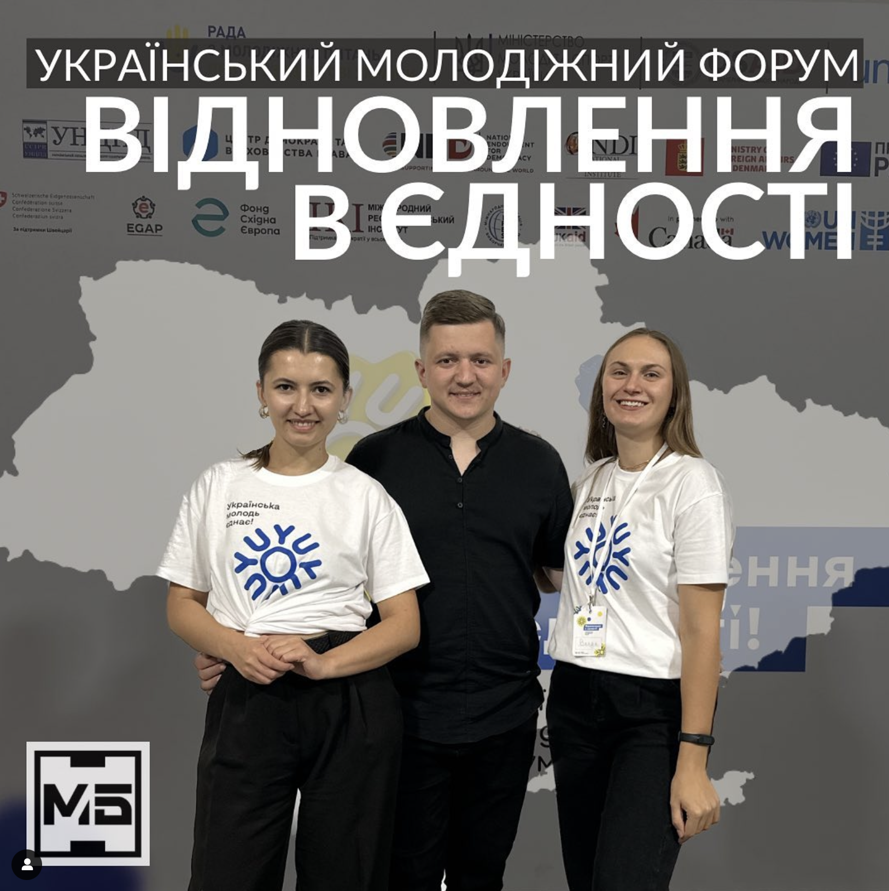

Співзасновники нашої громадської організації фасилітували декілька молодіжних діалогів від ГО «Молодіжна платформа»
У першій хвилі працювали з:
- Молодіжною радою при Вижницькій міській раді (Чернівецька область);
- Молодіжною радою при Боянській сільській раді (Чернівецька область);
- Молодіжною радою при Дрогобицькій міській раді (Львівська область).
У другій хвилі фасилітували тренінг для:
- Молодіжної ради при Хмельницькій обласній державній адміністрації (Хмельницька область).
Бажаємо Володимиру та Марії наснаги і в подальшому🔥
Проєкт впроваджується ГО «Молодіжна платформа» у рамках проєкту ПРООН "Підтримка громадянського суспільства та молоді", що реалізовується за фінансової підтримки Міністерства закордонних справ Данії.

Український молодіжний форум: Відновлення в єдності.
3 дні.
3 незабутні дні.
3 символічні дні для всієї молодіжної політики України.
Протягом 10-12 серпня члени ГО "Молодь Буковини" Володимир Крижановський, Марія Басараба і Владислава Близнюк мали можливість стати частиною дискусій, які стосувались розвитку молодіжної політики.
Стали активними слухачами виступів експертів та експерток у галузі молодіжної роботи.
Змогли затвердити старі та побудувати нові контакти, обмінятись досвідом із стейкхолдерами молодіжної політики та найактивнішою молоддю з різних куточків України.
А також зустрілись із Президентом України Володимиром Зеленським та Прем'єр-міністром України Денисом Шмигалем.
Організація таких відкритих платформ для діалогу - необхідна.